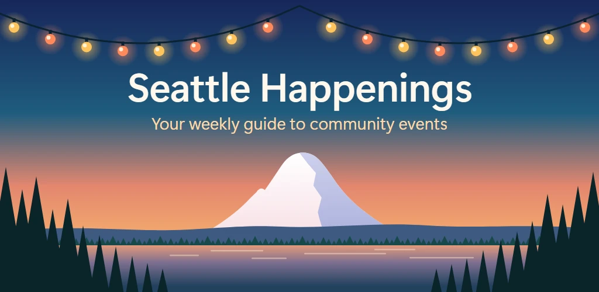
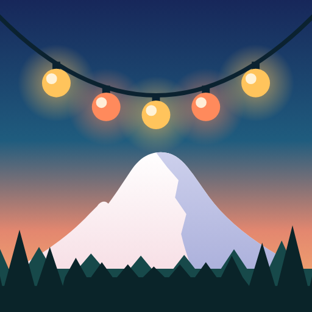
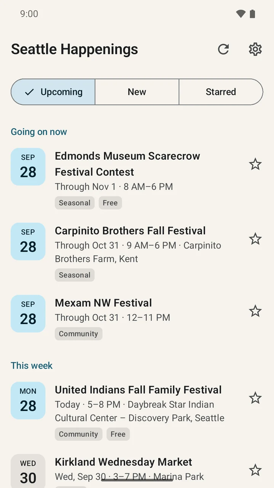
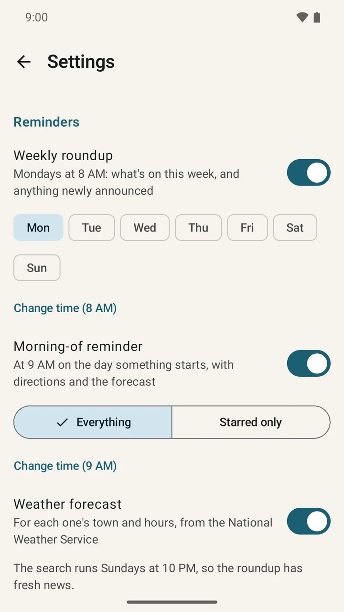
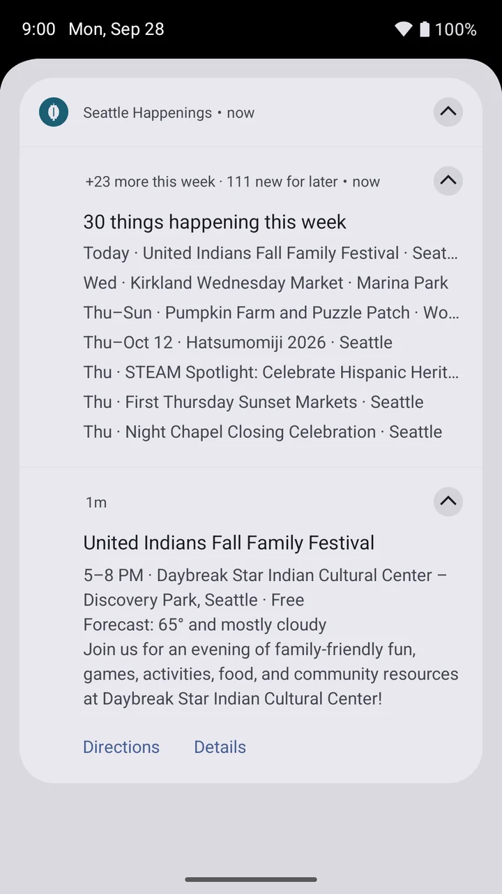
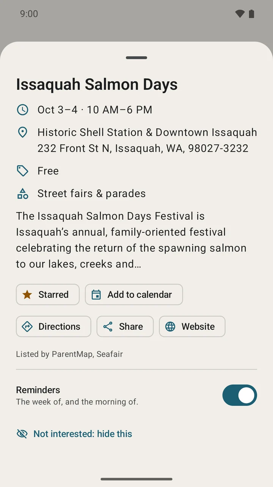
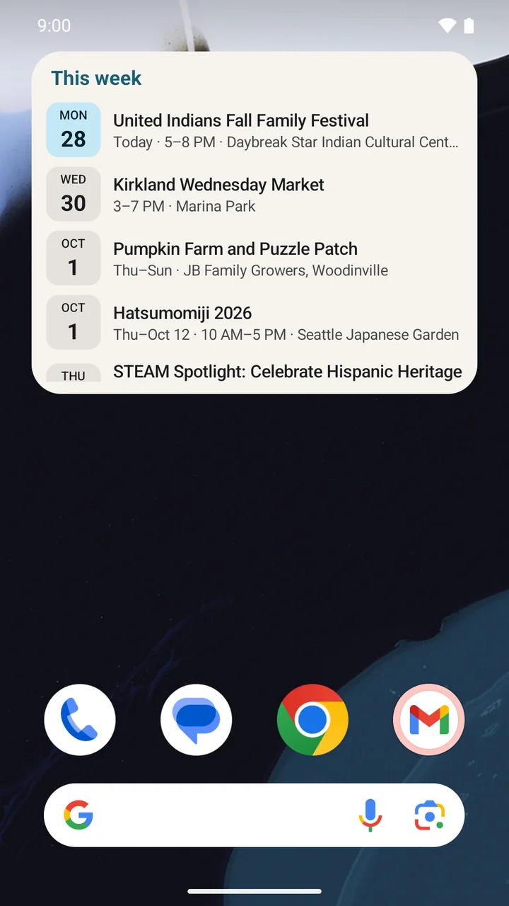
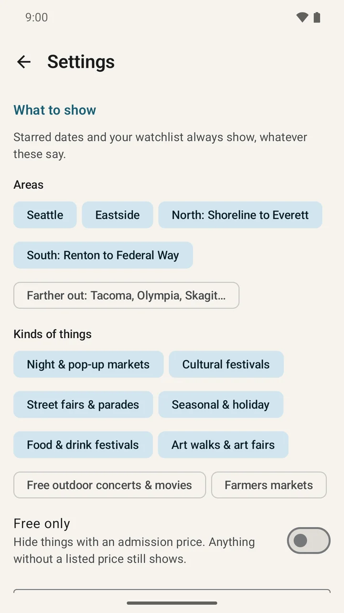

Weekly roundup
One notification. Your whole week.
See what's on this week and what was just announced for later, without opening twenty calendar tabs.
An Android events app for Greater Seattle
Seattle Happenings reads more than 20 local calendars and turns them into one short weekly roundup of markets, festivals, fairs, art walks, and more.


Seattle HappeningsCommunity events, sorted
The good local stuff
Skip the ticket-resale feed. Find the street fair down the road, the festival in the park, and the night market you would have heard about on Monday.
Less searching. More going.
Happenings does the repetitive work quietly, then gives you a useful heads-up when it matters.
Weekly roundup
See what's on this week and what was just announced for later, without opening twenty calendar tabs.
Morning-of reminders
Get the event time, directions, and the National Weather Service forecast for that town.
Stars and calendar
Star an event, add it to your calendar, and let Happenings move it if the organizer changes the time or place.
Festival watchlist
Add a festival before its dates are published. Happenings tells you the week they are announced.
Home-screen widget
Keep the next few events on your home screen so a good plan is always one glance away.

Set it once
Seattle, the Eastside, north to Everett, south to Federal Way, or farther out.
Pick event types, show only free events, or hide anything by keyword.
Happenings checks public calendars, merges duplicates, and gives you the short version.
Inside the app




Private by design
There is no account, no advertising, and no analytics or tracking code. Saved events, watchlists, and settings stay on your phone.
Read the full privacy policyNo. There is no sign-in or profile. Your saved events, watchlist, and settings stay on your phone.
No. The app does not ask for location access. Distance starts from a town you choose, and weather is requested for each event's town.
The app works fully without it. If you add your own Gemini API key, Happenings can also read festival pages and local news and sort events more carefully. The app explains exactly what is sent before you add a key.
Concerts, sports, and ticket-resale listings are left out on purpose. The focus is community events such as markets, festivals, fairs, parades, art walks, and free outdoor movies.
Yes. Dates, times, and locations can change, so always check with the organizer. When Happenings sees an update, it can also move an event it added to your calendar.
This weekend starts here
Download Seattle Happenings and get the next roundup before the weekend arrives.
Get it onGoogle Play